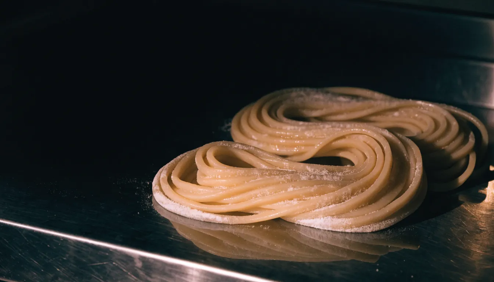
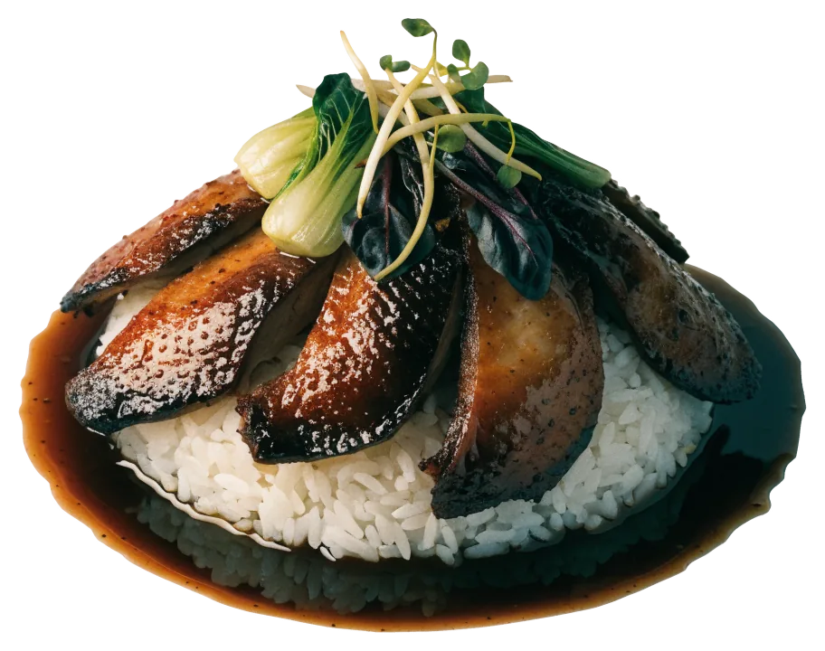
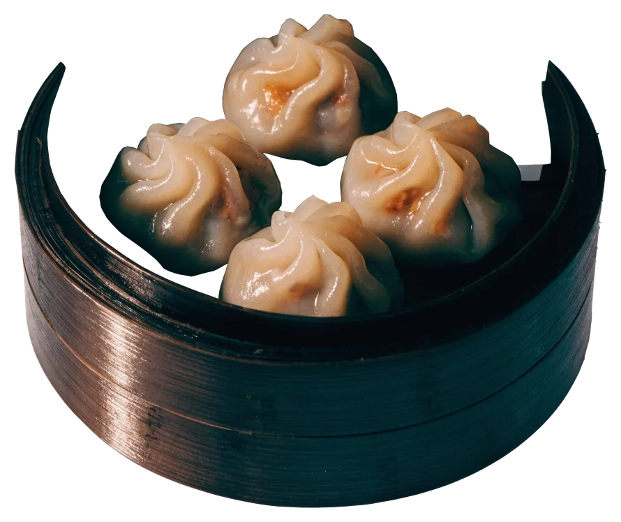

Nudeln
Hausgemachte Nudeln
Die Empfehlung vom Plakat im Fenster: Nudeln aus eigener Herstellung, als Suppe oder einfach so.
Grill-Ente, Nudeln, Dim Sum.
Mittags wie abends, mitten in der Altstadt.
Mo–Fr 11:30–21, Sa 12–21 Uhr
Große Bäckerstraße 8, Altstadt · auch zum Mitnehmen


Hier gibt es Dim Sum, Nudelsuppen und Grill-Ente, mittags und abends, zum Hieressen oder Mitnehmen. Bei gutem Wetter sitzt man draußen an den Tischen auf dem Gehweg.
鴨, 麵 und 點 hängen über dem Eingang. Jedes steht für einen Teil der Karte.
 Foto: euginiuz · Google Maps
Foto: euginiuz · Google Maps
Die Ente gibt es mit Reis und Pak Choi oder als halbe Ente mit Knochen.
 Foto: HEIDI FEI · Google Maps
Foto: HEIDI FEI · Google Maps
Die Nudeln macht das Haus selbst. Die Empfehlung vom Plakat im Fenster: Nudelsuppe mit gerösteter Ente.
 Foto: 德国柚子（Pomelo） · Google Maps
Foto: 德国柚子（Pomelo） · Google Maps
Siu Mai kommen im Bambuskorb. Die Teigtaschen sind unten knusprig gebraten, Sojasauce zum Dippen steht dabei.
Eine Auswahl aus der Karte. Die ganze Karte mit Preisen liegt im Lokal aus.

Nudeln
Die Empfehlung vom Plakat im Fenster: Nudeln aus eigener Herstellung, als Suppe oder einfach so.
Ente
Knusprig gebratene Ente mit Reis und Gemüse.
Nudeln · Ente
Hausgemachte Nudeln in Brühe, obenauf die geröstete Ente.

Dim Sum
Dim Sum, serviert im Bambuskorb.
Dim Sum
Unten knusprig, dazu Sojasauce zum Dippen.
Außerdem auf der Karte: Pekingente, halbe Ente mit Knochen, vegetarische Gerichte und Desserts.
Unter dem Schild 麵 steht Nudeln. Gemeint sind die eigenen, als Suppe mit gerösteter Ente oder einfach so. Unter 鴨 hängt die Grill-Ente. Unter 點 dampfen die Körbe.
 Foto: 张耀玮 · Google Maps
Foto: euginiuz · Google Maps
Foto: 张耀玮 · Google Maps
Foto: euginiuz · Google Maps
 Foto: Connie Wu · Google Maps
Foto: Connie Wu · Google Maps
Alles in die Mitte. Jeder nimmt.
Foto: 德国柚子（Pomelo） · Google Maps
 Foto: Ricardo Smania · Google Maps
Foto: Ricardo Smania · Google Maps
Mittags schnell, abends gemütlich, sonntags ist zu.
Der Eingang liegt unter den drei Leuchtkästen 鴨 麵 點. Von der U-Bahn Rathaus sind es wenige Gehminuten.
Tag, Uhrzeit, Personen – wir melden uns. Für mehr als acht Personen oder ganz kurzfristig lieber anrufen.
Foto: Restaurant Chen · Google Maps
Montag bis Samstag, Große Bäckerstraße 8.